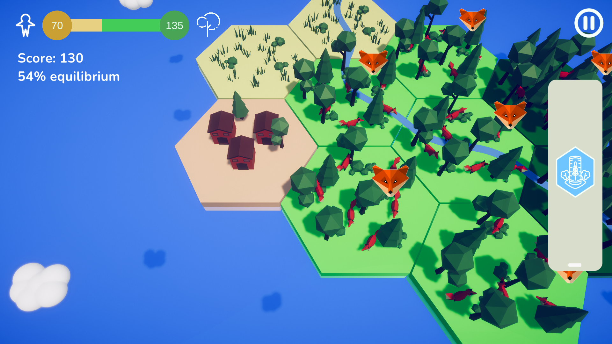
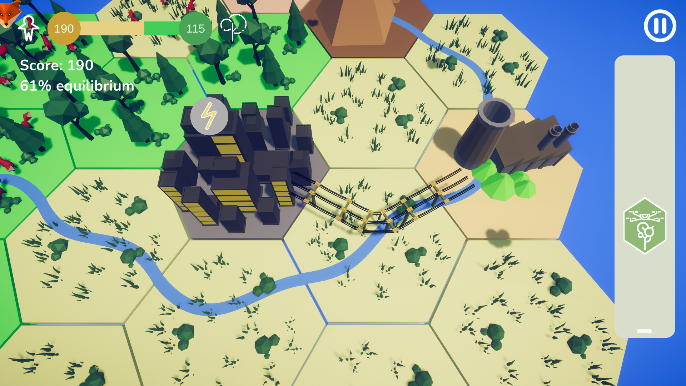
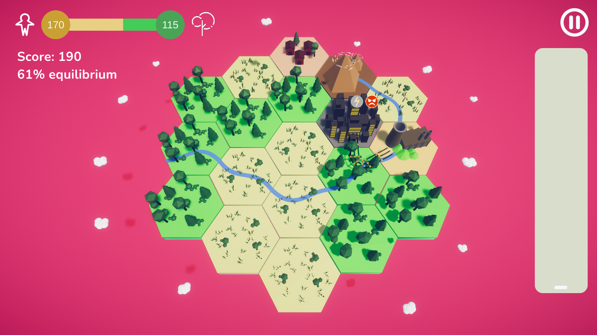
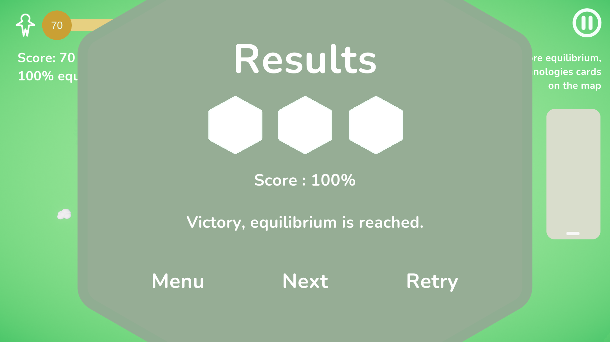

Le projet
Équilibre est un jeu de puzzle et de gestion relaxant, développé à l'occasion de la Game Jam Viva Technology 2022.
Le joueur utilise des technologies futuristes pour transformer un environnement, planter des arbres, construire des villes et développer la faune. Chaque action peut avoir des conséquences inattendues, et le défi consiste à trouver le bon équilibre entre les humains et la nature.
Le projet a remporté le prix Coup de cœur du jury lors de la Game Jam. Nous avons ensuite poursuivi son développement pendant deux mois afin de présenter une version jouable au salon Viva Technology 2022.
Mon rôle
J'ai occupé les rôles de Lead Developer et de chef d'équipe sur ce projet.
J'ai participé à la conception et au développement du gameplay, tout en assurant la coordination de l'équipe, la répartition des tâches et le suivi de la production jusqu'à la présentation du jeu à Viva Technology.
Les origines de Hex Harmony
Équilibre est le prototype à l'origine de Hex Harmony, mon premier jeu indépendant développé entièrement en solo.
J'ai repris le concept imaginé pendant la Game Jam pour en faire un jeu plus complet, avec de nouvelles mécaniques, une progression par niveaux et un univers retravaillé. L'idée de départ reste la même : trouver un équilibre entre la nature et les humains grâce aux technologies.
Galerie




Et si on travaillait ensemble ?
Parlons de votre projet. Un jeu à développer, une équipe à accompagner, des cours à organiser ou un outil à créer ? Écrivez-moi.
Montpellier, France